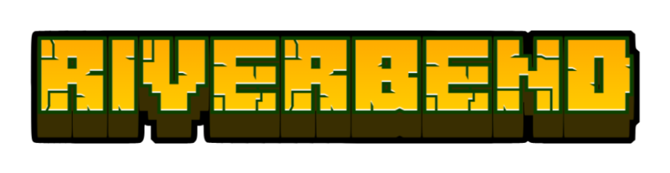
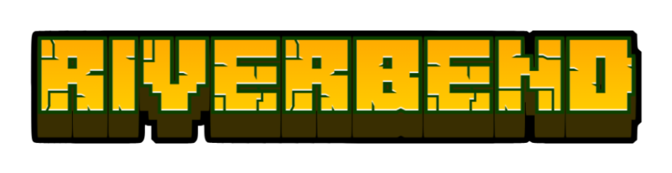

Ein Phuxanem Network Server
Über Riverbend
Willkommen in Riverbend!
Origins Klassen
Erforsche unser vielfältiges Angebot an Origins und wähle Dein Schicksal!
Elfenvölker
Waldelf (Wood Elf)
Die Waldelfen sind eine weise, langlebige Ethnie, die in Harmonie mit der Erde lebt. Sie sind schnell mit Schwert und Bogen und können ihre Feinde in den Bäumen überlisten.
Powers:
- Natürlicher Bogenschütze: Waldelfen verbringen ihr ganzes Leben damit, mit Bögen zu üben – ihre Pfeile sind immer tödlicher.
- Waldsicht: Wenn sie sich im hohen Gebüsch oder in den Blättern befinden, können Waldelfen sich ducken, um Nachtsicht zu erhalten und für nahegelegene Kreaturen unsichtbar zu werden.
- Adlerauge: Waldelfen können einen Feind für kurze Zeit verfolgen, nachdem sie ihm Schaden zugefügt haben, selbst wenn er außer Sicht ist.
- Fokussierung: Nach ein paar Sekunden des Anspannens können Waldelfen einen Pfeil mit erhöhter Geschwindigkeit abschießen, der Gegner durchbohrt, weiter fliegt und mehr Schaden verursacht.
- Elegant: Waldelfen haben weniger Gesundheit und werden durch das Tragen von schwerer Rüstung verlangsamt (dies kann durch eine Verzauberung verhindert werden).
- Bewahrer: Waldelfen leben vom und im Einklang mit dem Wald – sie können kein Fleisch verdauen.
- Überragend: Waldelfen sind etwas größer als der durchschnittliche Mensch.
- Anmutig: Waldelfen sind nicht so stark, aber sie sind schnell. Ihre Angriffe verursachen weniger Schaden, sind jedoch etwas schneller.
Hochelf (High Elf)
Hochelfen sind bekannt für ihre Arroganz, obwohl sie unbestreitbar talentiert sind; elementare Magie fließt stark durch ihr Blut, aber sie sind schwächer im Umgang mit Waffen.
Fähigkeiten:
- Elegant: Hochelfen werden durch das Tragen von schwerer Rüstung verlangsamt (dies kann durch eine Verzauberung verhindert werden) und haben weniger Gesundheit.
- Essenz ziehen: Durch das Halten verschiedener Gegenstände können Hochelfen die Energie des Objekts kanalisieren, um verschiedene Magien zu entfesseln.
- Zerbrechlich: Ein Hochelf ist nicht für den Nahkampf gebaut. Sie sind viel anfälliger für physischen Schaden und haben weniger Gesundheit.
- Mystische Affinität: Hochelfen sind mächtige und kluge Manipulatoren arkaner Energie - sie verursachen mehr Magieschaden und erleiden weniger Magieschaden als andere Rassen.
- Hochgeboren: Hochelfen haben von Natur aus mehr Mana als andere Rassen und können die Kraft ihrer Ahnen kanalisieren, um Mana schnell zu regenerieren.
- Überragend: Hochelfen sind schlank und etwas größer als der durchschnittliche Mensch.
Mondelf (Moon Elf)
Mondelfen sind geheimnisvolle, ätherische Wesen aus einer anderen Welt. Sie sind nicht nach ihrer Heimat benannt, sondern nach dem einzigen, was ihre Opfer vor ihrem Ende sehen können.
Fähigkeiten:
- Fremde Welt: So sehr sie es auch versuchen, Mondelfen können in der Oberwelt nicht schlafen.
- In die Schatten: Im Dunkeln können Mondelfen unsichtbar werden, indem sie sich schleichen, und sich eine kurze Distanz bewegen, während sie verborgen sind. Bei einem Angriff aus der Tarnung heraus verursacht der erste Angriff Bonus-Schaden und beendet die Unsichtbarkeit. Dies verursacht zusätzlichen Schaden, wenn ein Dolch geführt wird.
- Elegant: Mondelfen werden durch das Tragen von schwerer Rüstung verlangsamt. Dies kann durch eine Verzauberung verhindert werden.
- Ätherisch: Mondelfen sind dünn und sogar leicht durchscheinend, und ihre Haut hat einen eigentümlichen blauen Farbton.
- Zerbrechlich: Mondelfen haben reduzierte Gesundheit und erleiden erhöhten physischen Schaden.
- Mondlicht-Schurke: Mondelfen sind am effektivsten, wenn sie eine leichte und leicht zu versteckende Waffe führen. Sie verursachen mehr Schaden mit Dolchen und Messern.
- Wendig: Mit ihren schnellen Reflexen haben Mondelfen eine kleine Chance, jedem Angriff auszuweichen.
- Überragend: Mondelfen sind etwa genauso groß wie ihre entfernten Verwandten aus dem Wald und somit etwas größer als Menschen.
Magische Lebewesen
Alfiq (Alfiq)
Alfiq sind eine listige Spezies von anthropomorphen Katzen mit scharfen Krallen und hervorragender Beweglichkeit. Ihre Wege führen oft zu warmen Sanden.
Fähigkeiten:
- Klaue: Kurz vor Sonnenuntergang und Sonnenaufgang bewegen und angreifen Alfiq viel schneller. Zu anderen Zeiten sind sie träge und etwas langsamer.
- Dämmerungsaktiv: Kurz vor Sonnenuntergang und Sonnenaufgang bewegen und angreifen Alfiq viel schneller. Zu anderen Zeiten sind sie träge und etwas langsamer.
- Auf den Beinen: Falls du aus einer Höhe fällst, bei der du 5 Herzen oder mehr Schaden erleiden würdest, erleidest du stattdessen keinen Schaden.
- Dieb: Klicke mit der rechten Maustaste auf den Rücken eines Dorfbewohners, während du dich mit leeren Pfoten hockst, um eine Chance zu haben, einige Smaragde zu stehlen. Oder werde erwischt. Es heißt, dass du möglicherweise auch von anderen Spielern stehlen kannst.
- Sprung: Nachdem du dich kurz ohne Bewegung gehockt hast, um aufzuladen, kann ein Alfiq eine große Distanz nach vorne springen. Einen Feind während des Sprungs zu treffen, verursacht zusätzlichen Schaden.
- Schlechte Griff: Alfiq haben eine reduzierte Abbaulgeschwindigkeit mit Werkzeugen und verursachen weniger Schaden mit Handwaffen wie Schwertern und Äxten.
- Wendige Vorliebe: Alfiq ziehen es vor, nur leichte Rüstungen zu tragen, um sich besser bewegen zu können. Schwerere Rüstungen können ohne Strafe mit einer Verzauberung getragen werden.
- Maunzen: (Keine Beschreibung vorhanden)
Fae (Fae)
Fae sind kleine, magische, geflügelte Humanoide, die als Naturgeister gelten und als solche bekannt sind, dass sie Wälder heimsuchen und Reisende in die Irre führen. Sie sind gleichermaßen mystisch und trickreich.
- Attraktivität: Fae sind von Natur aus anziehend. Mobs werden ihnen aus viel größerer Entfernung folgen als anderen Kreaturen.
- Winzig: Fae sind ziemlich klein, die meisten sind kaum größer als der durchschnittliche Goblin.
- Magische Unterdrückung: Eisen und Silber hemmen die Kräfte der Fae. Es ist unerträglich für sie, solche Materialien zu tragen.
- Levitation: Fae sind leichte, geflügelte Kreaturen, die mühelos in der Luft schweben können. Drücke die primäre aktive Taste, um nach oben zu schweben.
- Magieresistenz: Als magische Wesen selbst nehmen Fae weniger Magieschaden im Vergleich zu anderen Kreaturen.
- Regeneration: Fae können magische Energie kanalisieren und sich schnell heilen, jedoch auf Kosten von Hunger.
Pixie (Pixie)
- Fluch des Fliegens: Pixies können keine Rüstungen tragen, die mehr als Leder sind, und können keine anderen Flügel verwenden, um anders zu fliegen.
- Federfüßig: Pixies sind so leicht, dass sie keinen Fallschaden nehmen können.
- Auf den Staub: Pixies können fliegen und sich nach vorne und oben bewegen. Lies die Kästchen neben dieser Fähigkeit für Anweisungen, wie man fliegt.
- Abkürzung: Du kannst dich auf den Kopf eines anderen Spielers setzen, indem du ihn mit leeren Händen rechtsklickst.
- Gutes Glück: Obwohl Pixies störend sein können, werden sie auch mit Glück assoziiert. Beim Bergbau erhalten sie gelegentlich etwas Wertvolles aus normalem Stein.
- Unfug Macht den Menschen: Pixies sind in der Lage, zahlreiche schelmische Taten auszuführen, die, wenn sie auch nicht immer gefährlich sind, sicherlich laut sind.
- Häppchenweise: Pixies gehören zu den kleinsten Kreaturen, die das Land durchstreifen, und erreichen selten sogar das Knie eines durchschnittlichen Menschen.
- Durchweicht: Da sie so klein sind, stellt Wasser eine erhebliche Bedrohung für Pixies dar. Es hemmt ihre Bewegung und beeinträchtigt ihre Fähigkeit zu fliegen.
- Störenfried: Dorfbewohner kennen Pixies durch die Legenden über den Ärger, den sie verursachen, und weigern sich, mit ihnen zu handeln.
Mythische Kreaturen
Arachnae (Arachnae)
Eine groteske Mischung aus Spinne und Mensch, mit giftigen Zähnen und borstigen Füßen, jedoch der Fähigkeit, aufrecht zu gehen und Waffen zu führen.
- Bodenloser Magen: Arachnae benötigen eine größere Menge an Nahrung, um am Leben zu bleiben.
- Spröde: Das chitinöse Exoskelett der Arachnae erschwert die Bewegung, wenn sie schwerere Rüstungen als Eisen tragen. Dies kann durch einen Zauber verhindert werden.
- Kletterer: Die feinen Borsten an den Beinen der Arachnae ermöglichen es ihnen, Wände hinaufzuklettern.
- Empfindlich: Das Exoskelett der Arachnae ist anfälliger für Schäden. Sie haben etwas weniger Gesundheit als ein gewöhnlicher Mensch.
- Viele Augen: Die acht Augen der Arachnae sind an die Dunkelheit angepasst und ermöglichen es ihnen, selbst bei sehr wenig Licht klar zu sehen.
- Giftiger Biss: Die Zähne der Arachnae enthalten Gift, und jeder Angriff hat die Chance, Gift zuzufügen.
- Spinnweben Schwinger: Arachnae können auf Befehl Spinnweben spinnen, in denen ihre Gegner für eine kurze Zeit immobilisiert werden.
Gorgon (Gorgon)
Gorgonen sind verfluchte Kreaturen, die einst Menschen waren, mit Haaren aus sich windenden Schlangen und einem erschreckenden Gesicht, das angeblich diejenigen versteinert, die es sehen.
- Hydrophob: Gorgonen können die Reinheit von Wasser nicht ertragen und nehmen Schaden durch Wasser.
- Zu Stein: Gorgonen sind dazu verflucht, in dunklen Höhlen und alten Verliesen gefangen zu bleiben. Draußen im Tageslicht werden sie bis zur Nacht versteinert. Dies kann durch das Tragen eines Helms negiert werden.
- Silberabneigung: Gorgonen sind gegenüber der Reinheit von Silber empfindlich – sie können es nicht ertragen, es zu tragen, und nehmen Schaden, wenn sie es führen. (Eisen wird ebenfalls als Silber gezählt)
- Versteinender Blick: Blicken Sie in die Augen eines jeden Mobs, der Ihnen gegenübersteht, und verwandeln Sie ihn kurzzeitig in Stein. Funktioniert nicht bei Bossen.
- Vergiftetes Blut: Gorgonen sind gegen Gift immun und haben die Chance, ihr toxisches Blut auf nahe Feinde zu verschütten, wenn sie getroffen werden, was diese vergiftet.
- Rache: Gorgonen verursachen bei niedrigem Gesundheitswert erheblich mehr Schaden.
Yeti (Yeti)
Dick behaarte Bestien aus frostigen Wäldern, deren Herrschaft über das Eis ihnen erlaubt, Feinde einzufrieren, aber sie sind besonders anfällig für feurige Angriffe.
- Entflammbar: Yetis sind aufgrund ihrer winterlichen Natur anfällig für Feuerschaden.
- Frigider Puls: Yetis können auf Befehl nahe Feinde in Eis einschließen. Funktioniert nicht im Nether oder bei Bossen.
- Woher du kamst: In eisigen Biomen bewegen sich Yetis schneller und negieren Fallschaden.
- Frostiger Atem: Der frostige Atem des Yetis verlangsamt alle Gegner, die ihm nahe kommen.
- Dickes Fell: In Wüsten wird dickes Fell zum Fluch - es verlangsamt die Bewegung der Yetis und reduziert ihre Gesundheit.
- Titanisch: Yetis haben viel mehr Gesundheit als ein gewöhnlicher Mensch.
- Unaufhaltsam: Yetis sind immun gegen den Verlangsamungseffekt.
- Winterkörper: Yetis sind etwas größer als ein gewöhnlicher Mensch und erheblich breiter.
Andere Spezies
Zwerg (Dwarf)
Zwerge sind praktisch, stämmig und stolz. Sie sind ausgezeichnet im Bergbau und im Leben unter der Erde, kämpfen jedoch mit dem Tageslicht. Stein und Felsen, Bruder.
- Dunkelheitsbewohner: Direktes Sonnenlicht verbrennt die Augen der Zwerge und blendet sie vorübergehend. Mit einem Zauber oder einem Goldhelm verhinderbar.
- Dicht: Zwerge sind extrem schwer für ihre Größe; sie sinken schnell im Wasser.
- Zwergentechnologie: Zwerge sind in der Lage, Stein ohne Spitzhacke abzubauen und abbauen alles schneller als andere.
- Stämmig: Zwerge sind gerade kurz genug, um in einen Tunnel von 1 Meter Höhe (und fast ebenso breit) zu passen.
- Nachtäugig: Zwerge können sich fokussieren, um klar zu sehen, ohne Lichtquelle.
- Potentes Gebräu: Zwerge sind berüchtigt für ihre kräftigen Getränke, die jemanden zweimal so groß wie sie ausknocken würden. Aktivieren, um einen Schluck zu nehmen und die Gesundheit vollständig wiederherzustellen.
Goblin (Goblin)
Goblins sind besessen von Gold und Schätzen und finden dazu oft etwas mehr Beute, wohin sie auch blicken. Ihre kleine Größe macht sie jedoch anfällig im Kampf.
- Listig: Goblins sind clevere Kreaturen und wissen, wo sie seltenere Beute finden können, die die meisten anderen übersehen würden.
- Zerbrechlich: Aufgrund ihrer kleinen Statur haben Goblins weniger Gesundheit und sind anfälliger für Schaden.
- Gierig: Goblins haben eine besondere Beziehung zu Schätzen – sie erhalten zusätzliche Boni, wenn sie goldene Ausrüstung verwenden oder tragen.
- Vorsichtiger Horten: Gold in den Händen eines Goblins hält viel länger als bei den meisten anderen, die damit nachlässig umgehen.
- Wendig: Obwohl sie klein sind, sind Goblins ziemlich schnell, was es ihnen ermöglicht, die meisten stärkeren Feinde zu überholen, anstatt zu kämpfen.
- Wachstumsstörungen: Goblins sind sehr klein, weniger als die Hälfte der Größe eines Menschen.
Oger (Ogre)
Oger sind eine große, jähzornige und brutale Unterart der Orks. Ihre schwere Größe und begrenzte Intelligenz werden durch ihre rohe Stärke wettgemacht.
- Gigantisch: Oger sind massig und passen nicht durch Türen oder in viele kleine Strukturen.
- Führerbauch: Oger kümmern sich wenig darum, was sie essen. Essen ist Essen. Sie sind gegen Gift und Hunger immun.
- Räuberisch: Oger sind fast nie satt; sie müssen nahezu ständig essen, um zufrieden zu bleiben.
- Verwüster: Äxte fühlen sich in der Hand eines Ogers richtig an; dieser Komfort ermöglicht es ihnen, mit viel mehr Kraft zu schwingen.
- Blutrausch: Oger neigen dazu, unvorhersehbar in eine blinde Wut zu verfallen, in der sie schnell durch eine Horde von Feinden stampfen können, aber kaum erkennen, was um sie herum geschieht.
- Langsam: Oger sind langsamer als die meisten, um trotz ihrer massiven Größe etwas Energie zu sparen.
- Stämmig: Die dicke Haut und die dichten Knochen der Oger ermöglichen es ihnen, viel mehr Treffer einzustecken als andere.
Mensch (Human)
Der Mensch ist einfach der normale Spieler ohne besondere Eigenschaften.
- Normalität: Es passiert nichts
Übernatürliches
Banshee (Banshee)
Banshees sind gequälte Geister, deren Schreie Glas zerschmettern und Menschen in den Wahnsinn treiben können. In der Mythologie wird ihre Anwesenheit oft als Vorbote des Todes angesehen.
- Spektral: Banshees besitzen die Fähigkeit, immateriell zu werden, und sich frei im physischen Bereich zu bewegen, ohne mit ihm interagieren zu können. Dies erfordert enorme Energie und kann nicht aktiviert werden, wenn der Hunger niedrig ist.
- Verflucht: Banshees sind von Flüchen umhüllt. Jedes Mal, wenn sie getroffen werden, besteht eine kleine Chance, dass der Angreifer einem langsamen, qualvollen Tod geweiht wird.
- Immateriell: Banshees haben nur die Hälfte der Gesundheit eines lebenden Menschen.
- Dimeritium-Fesseln: Magisch unterdrückende Metalle wie Eisen oder Silber sind für Banshees völlig unerträglich.
- Lunar Nexus: Banshees regenerieren keine Hunger durch Nahrung - ihre Energie wird nur durch direktes Mondlicht wiederhergestellt. Sie können jedoch nicht verhungern.
- Vorhersehbare Elegie: Die Schreie der Banshee kündigen den Tod an. Sie können einen ohrenbetäubenden Schrei ausstoßen, der nahegelegene Wesen zurückdrängt und einen kleinen Schutzkreis beschwört. Ziele, die direkt vom Schrei getroffen werden, werden desorientiert.
- Verfluchtes Siegel: Du verursachst erhöhten Schaden, wenn du eine verfluchte Waffe führst.
- Verfluchter Schutz: Du widerstehst zusätzlichem Schaden für jedes Stück verfluchter Rüstung, das du trägst.
Incubus (Incubus)
Incubi sind böse Diener einer dunklen Macht. Sie sind in ihrem eigenen Reich mächtig, haben aber im Austausch dafür ihre Seele aufgegeben und sind anfällig für reine Quellen.
- Karnivore: Der Blutdurst eines Incubus ist unersättlich. Wenn es nicht das Fleisch eines Tieres ist, ist es wertlos.
- Teufelsfeuer: Incubi sind von Natur aus stärker in allen Feuerzaubern und können nach Belieben einen Flammenstoß freisetzen. Skaliert mit Feuerzauber-Power.
- Höllenheimat: Feuer fühlt sich wie zuhause an - es verursacht keinen Schaden bei Incubi und sättigt sie.
- Hydrophob: Wasser verbrennt Incubi und schädigt sie bei Kontakt.
- Unrein: Incubi erleiden zusätzlichen Schaden durch „Schlag“ und umgekehrte Effekte von Heilung und Schaden.
- Reichsvorteil: Incubi sind Dimensionen, in denen die Sonne scheint, nicht gewöhnt und sind dort schwächer, aber sie sind im Nether erheblich stärker.
- Unheiliges Geschäft: Ein Incubus kann einen Teil seiner Lebensenergie gegen rohe Kraft für kurze Zeit eintauschen. Ausgelöst mit der Primär-Aktiv-Taste.
Plague Victim (Pestopfer)
Krankheitserfüllte, halb tote Kreaturen, die nicht mehr als menschlich bezeichnet werden können, verflucht und gefangen in ewigem Leid aufgrund einer seltsamen magischen Krankheit.
- Contagious: Die Verfallenen sind ein schrecklicher Anblick. Dorfbewohner werden aus Angst den Handel mit ihnen verweigern.
- Foul Aura: Eine schreckliche Magie umgibt das Opfer und verzehrt langsam das Leben aller Lebenden in der Nähe.
- Insomniac: Schlaf ist für die Verfallenen unmöglich, aufgrund ihrer endlosen Qualen.
- Plague Immunity: Obwohl die immense Schmerzen nie enden, gibt es nur so viel Gewebe, das sterben kann. Träger sind immun gegen Gift und Verwelken.
- Eternal Suffering: Einmal alle 5 Minuten, beim Tod, werden die Verfallenen stattdessen gewaltsam am Leben gehalten, um ihr Leid zu verlängern.
- Contagious Hex: Jedes Mal, wenn du zuschlägst, besteht eine Chance, die Infektion zu verbreiten.
- Sensitive Skin: Die Verfallenen sind mit Quaddeln und Geschwüren bedeckt, die empfindlich und schmerzhaft zu berühren sind. Ihre Opfer können keine Rüstung tragen, aufgrund des Schmerzes, den sie verursachen.
- Skin and Bones: Diese Krankheit saugt den Geist aus, was zu verringerter Gesundheit und Geschwindigkeit führt.
Revenant (Rächer)
Rächer sind unglückliche Seelen, die einen grausamen und schmerzhaften Tod gestorben sind, aber unerklärlicherweise wieder zum Leben zurückgekehrt sind. Infolgedessen werden sie besessen davon, das Leben und den Tod anderer Kreaturen zu manipulieren.
- Black Thumb (Schwarzer Daumen): Ein Revenant kann keine Ernte einbringen; die Pflanzen welken bei ihrem tödlichen Berührung.
- Disturbed (Gestört): Das Experimentieren mit dem Verbotenen verdirbt den Verstand. Revenants können nicht schlafen, zu ängstlich, um von dem zu träumen, was sie lieber nicht gewusst hätten.
- Reaper's Ward (Scharfrichter-Schutz): Auf Wunsch kann ein Revenant einen Kreis von inaktiven Skeletten erheben, der als vorübergehender Schutz dient, um sie vor Gefahr zu bewahren und nahe Feinde zu schädigen.
- Putrid Communion (Fauliger Bund): Durch den beunruhigenden Akt des Verzehrs von Fleisch oder Knochen der Untoten kann ein Revenant seine nächste Beschwörung desselben Typs stärken.
- Necrotic Curse (Nekrotischer Fluch): Revenants sind immun gegen Verwelken und nehmen wie Untote zusätzlichen Schaden durch Vernichtung, erhalten umgekehrte Effekte von Heilungs- und Schadenszaubern und sind immun gegen Gift und Regenerations-Effekte.
- Revenance (Rächerkraft): Revenants können Kreaturen der Nacht rekonstruieren, die modifiziert sind, um ihren eigenen Befehlen zu folgen. Diese fungieren als Haustiere, folgen und teleportieren, und Skelette können mit beliebigen Waffen ausgerüstet werden. Die Stärke der Nicht-Reittiere skaliert mit der Seelenzauberkraft. Beschwören durch Aktivieren, während du hältst:
- Chaotic Ally (Chaotischer Verbündeter): Dorfbewohner werden sich weigern, mit Revenants zu handeln, und Eisengolems werden sie beim Anblick angreifen. Sie werden jedoch unter den Reihen der Plünderer akzeptiert.
- Essence Extraction (Essenzextraktion): Wenn du getroffen wirst, baust du langsam eine Kraft auf, die es dir ermöglicht, Leben von deinen Feinden abzuzapfen. Dies wirkt sich auf alle Kreaturen aus, zum besseren oder schlechteren, mit Ausnahme von beschworenen Toten.
- Unguarded (Unbewacht): Die Besessenheit für das Geisterreich macht Revenants anfälliger für Angriffe im physischen Reich. Die meisten Kreaturen verursachen mehr Schaden bei ihnen.
Siren (Siren)
Sirenen sollen eine Art Meerfolk sein. Sie haben eine fesselnde Aura und ihre unwiderstehliche Schönheit wird als Untergang vieler törichter Seeleute angesehen.
- Amphibisch: Sirenen, als Teil der Meerwesen, können sowohl im Wasser überleben als auch mit erhöhter Geschwindigkeit schwimmen.
- Entflammbar: Sirenen und Feuer vertragen sich nicht. Jeder Kontakt mit Flammen führt zum sofortigen Tod. Pass also auf, wo du trittst!
- Heiliges Wasser: Sirenen haben regenerative Kräfte, die in Wasser voll zur Geltung kommen.
- Überfordert: Obwohl Sirenen an Land gut überleben können, ist es nicht ihre natürliche Umgebung. Daher gelten ihre regenerativen Fähigkeiten nicht, und alle erlittenen Schäden können nur durch Tränke geheilt werden.
- Anfällig: Während Sirenen ihre Körper regenerieren können, sind sie anfällig für stumpfe Gewalt. Nahkampfangriffe verursachen mehr Schaden.
- Sirenengesang: Drücke die Primär-Aktiv-Taste, um alle Mobs in deiner Umgebung neutral zu machen, bis sie getroffen werden. Funktioniert nicht bei Bossen oder Spielern.
- Fesselnd: Drücke die Sekundär-Aktiv-Taste, um die Gunst eines Dorfbewohners zu gewinnen und bessere Handelsangebote zu erhalten.
- Wasserblick: Sirenen haben eine überlegene Unterwasser-Sicht im Vergleich zu anderen Kreaturen.